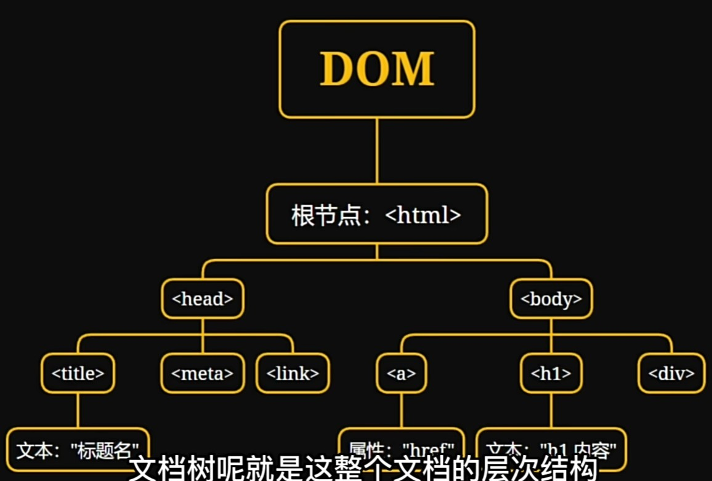

JavasScript知识
基本概念
- JavaScript是一种轻量级 解释性 面向对象的脚本语言 用于网页上的动态效果 增强交互性
- JavaScript是一种客户端脚本语言 可以直接嵌入HTML 并且在浏览器中执行
- 客户端脚本——在用户浏览器中执行
- 网页开发——与html与css协同工作 增强网页的交互性和动态性
- 后端开发——使用node.js JavaScript在服务端运行 实现服务端开发
JavaScript的导入方式
- 内部嵌入式——在html文件中使用script标签
- 外部导入式——在html文件中使用script src="demo.js"导入外部js文件
变量
- var 声明变量 有函数作用域
- let 给变量赋值 有块作用域
- const 常量
条件/循环语句
- 条件语句 if(){} else if(){} else{}
- 循环语句 for(初始化;条件;迭代器){}
- 循环语句 while(循环条件){}
- 循环语句 do{}while(循环条件)
- break和continue——continue只跳过本次循环 break终止循环
函数
- 函数声明 function 函数名(参数){ return xxx }
- 在函数内的变量 无法在函数外进行使用
事件
- HTML属性
- DOM属性
- addEventListener()f方法
| 事件 |
描述 |
| onClick |
点击 |
onMouseOver |
鼠标移动 |
| onMouseOut |
鼠标移出 |
| onChange |
文本内容改变 |
| onSelect |
文本框选中 |
| onFocus |
光标聚集 |
| onBlur |
光标移开 |
DOM
在web开发中 DOM通常与JavaScript一起使用
- 网页被加载时 浏览器会创建页面的文档对象 也就是DOM
- 每个HTML或XML文档可能会被视为一个文档树
- DOM为文档提供了一个编程接口 开发者可以使用JavaScript来操作树状结构

| 方法 |
描述 |
| appendChild |
添加新子节点 |
| removeChild |
删除子节点 |
| replaceChild |
替换子节点 |
| insertBefore |
在指定子节点前插入新节点 |
| createAttribute |
创建属性节点 |
| createElement |
创建元素节点 |
| createTextNode |
创建文本节点 |
| getAttribute |
获取属性节点 |
这是一个DOM的id1格式展示
这是一个DOM的class格式展示
这是一个DOM的id2格式展示